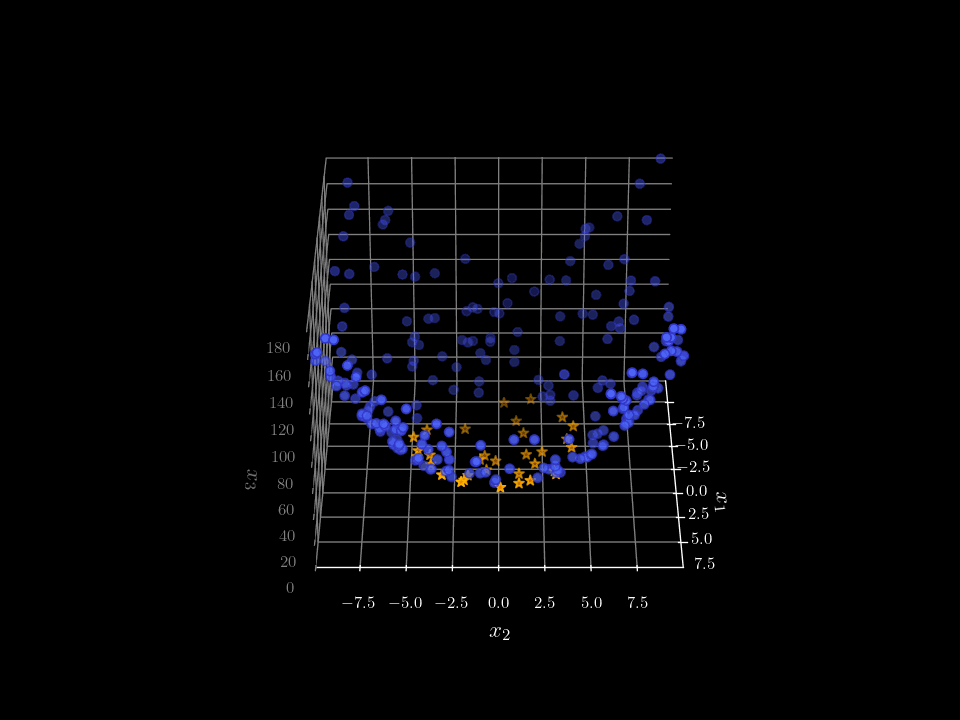
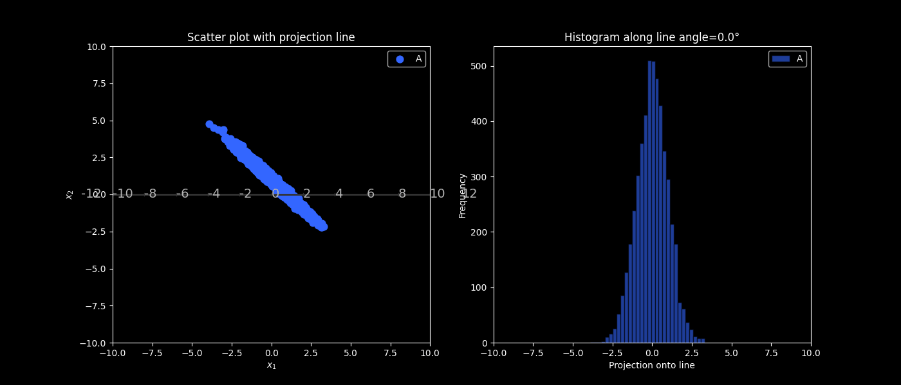
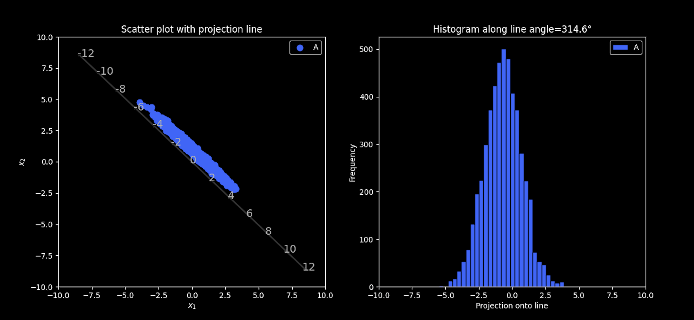
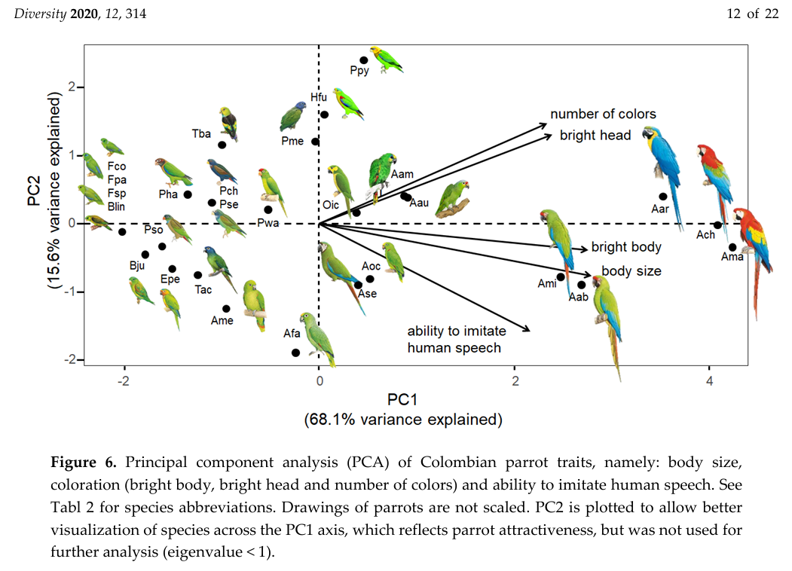
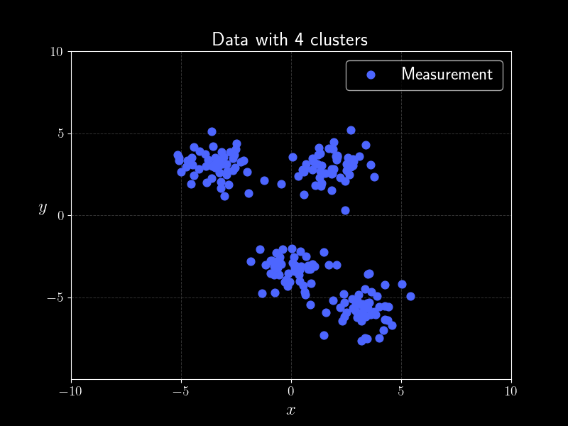
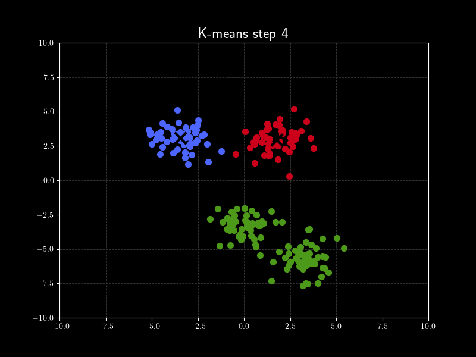

Cognitive Algorithms: Dimensionality Reduction
Hannah Louisa Boldt h.boldt@campus.tu-berlin.de
Organization
Next tutorial will be in person in Mar.0001 again!
Dimensionality Reduction

\[
\underbrace{\begin{bmatrix} 1 & 0 & 0 \\ 0 & 1 & 0 \end{bmatrix} }_{\text{projection}}
X
= X_{projected}
\]
Approach 1: Maximize Variance in Projected Space


Left shows all possible projections in lower dimensional subspace. Right shows projection one subspace that maximizes variance.
Approach 1: Maximize Variance in Projected Space
Which algorithm from the lecture uses this approach?
PCA!
Principal Component Analysis
- Compute empirical covariance matrix \(\frac{1}{n} XX^\top = \Sigma_x \in \mathbb{R}^{d \times d}\)
- Compute eigenvalues of \(\Sigma_x\)
-
For the \(k\) largest eigenvalues \(\lambda_1, \dots, \lambda_k \in \mathbb{R}\), calculate corresponding eigenvectors \(w_1, \dots, w_k \in \mathbb{R}^d\)
and form the projection matrix:
\[
W =
\begin{bmatrix}
| & | & \dots & | \\
w_1 & w_2 & \dots & w_k \\
| & | & \dots & |
\end{bmatrix}
\]
- Project data: \(H = W^\top X\)
- For reconstruction: \(X \approx W \cdot H\)
For centered data!
(Linear) kernel PCA
- Compute kernel matrix \(K = X^\top X \in \mathbb{R}^{n \times n}\)
- Compute eigenvalues of \(K\).
-
For the \(k\) largest eigenvalues \(\lambda_1, \dots, \lambda_k \in \mathbb{R}\), compute corresponding eigenvectors \(v_1, \dots, v_k \in \mathbb{R}^n\).
Form matrix \(\alpha\) and projection:
\[
\alpha =
\begin{bmatrix}
| & | & \dots & | \\
v_1 & v_2 & \dots & v_k \\
| & | & \dots & |
\end{bmatrix}, \quad
W = X \alpha
\]
- Project data: \(H = W^\top X\)
- For reconstruction: \(X \approx W \cdot H\)
For centered data! Same result as PCA, different complexity.
PCA: Plotting with latent variables

Source: Opportunistic or Non-Random Wildlife Crime? Attractiveness Rather Than Abundance in the Wild Leads to Selective Parrot Poaching
Approach 2: Clustering


We want to find k clusters. In this image we use k = 3.
Which algorithm from the lecture uses this approach?
k Means!
k-means algorithm
Let \(X \in \mathbb{R}^{n \times d}\) be the data matrix containing
\(n\) data points \(\mathbf{x}_i \in \mathbb{R}^d\).
-
Initialize \(k\) cluster vectors \(c_j \in \mathbb{R}^d\) randomly then
\[
C =
\begin{bmatrix}
| & | & \dots & | \\
c_1 & c_2 & \dots & c_k \\
| & | & \dots & |
\end{bmatrix}
\in \mathbb{R}^{d \times k}.
\]
Each column represents one cluster center.
-
For each datapoint $\mathbf{x}_i$ assign to clusterpoint based on distance
then assignment matrix
\[
Y =
\begin{bmatrix}
| & | & \dots & | \\
y_1 & y_2 & \dots & y_k \\
| & | & \dots & |
\end{bmatrix}
\in \{0,1\}^{n \times k},
\]
where \(y_{ij} = 1\) iff \(\mathbf{x}_i\) is assigned to cluster \(j\).
-
Update each cluster center by the mean of all data points
assigned to that cluster.
-
Repeat 2. and 3. until either a maximum number of iterations is
reached or the cluster centers change by less than
\(\varepsilon > 0\).
This finds k classes in data.
Approach 3: Minimize Distance between matrices directly
\begin{align*}
\text{argmin}_{W,H} \sum_{i = 1}^d \sum_{j = 1}^n (X_{ij} - (WH)_{ij})^2
\end{align*}
Sum of all squared distances of each entry of the matrix.
What is the distance between $X$ and $WH$ given
$$ X = \begin{bmatrix}
1 & 0 & 0 \\
1 & 2 & 1
\end{bmatrix},
W = \begin{bmatrix}
0 \\ 1
\end{bmatrix},
H = \begin{bmatrix}
1 & 1 & 1
\end{bmatrix}?
$$
Which algorithm from the lecture uses this approach?
NMF!
Non negative matrix factorization algorithm
Gradient descent finds optimal solution!
$$ H \leftarrow H - \eta ( W^\top WH - W^\top X )$$
$$ W \leftarrow W - \eta ( WHH^\top - XH^\top )$$
Can also be transformed into...
$$ H = H \odot W ^\top X \oslash W^\top WH
$$
$$ W = W \odot XH^\top \oslash WHH^\top$$
Quick Break
Jupiter Notebook showing example code
Example: Bliss
An image is just 3 matrices.
Example: Bliss BW
A black and white image is just a matrix.
Example: Bliss PCA
This is using k = 10 and this is the reconstructed image.
Example: Bliss NMF
This is using k = 10 and this is the reconstructed image.
Lets find edges!
Let's use a simple edge detector.
Lets find edges!
Hmmm.. :/
Let's preprocess the image!
Color clustering
We use k = 3 because of green (grass), blue (sky) and white (cloud).
Edges detector on preprocessed image
Questions for upcoming Homework?